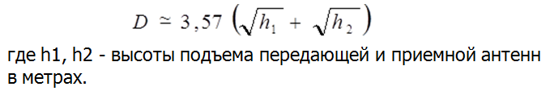
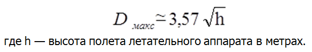
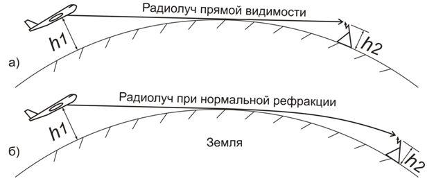
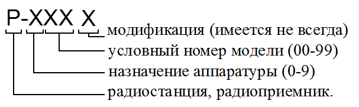
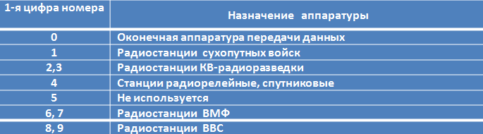

Ближняя радиосвязь.
Ближняя радиосвязь
Основной особенностью распространения ультракоротких радиоволн является то, что они не отражаются от ионосферы и уходят в космическое пространство. Радиосвязь МВ-ДМВ осуществляется главным образом поверхностным лучом, который сильно поглощается почвой и местными предметами. Из этого следует, что дальность распространения поверхностного луча не может быть большой. Обычно считают, что МВ-ДМВ радиосвязь может быть надежно осуществлена лишь в пределах геометрической видимости между антеннами радиостанций (рис. 1а). Расстояние прямой видимости (в километрах) может быть вычислено по фор-муле:

Для связи между летательными аппаратами и наземной радиостанцией значением высоты антенны наземной радиостанции можно пренебречь. Максимальная дальность радиосвязи в этом случае определяется формулой, полученной из (1.1) при h1 = 0:

При определении максимальной дальности радиосвязи, кроме расчетов для проверки выполнения условия дальности прямой видимости, необходимо обязательно учитывать мощность передатчика и чувствительность приёмника, уровень радиопомех в пункте приема, типы антенн и их размещение на летательном аппарате и земле и условия полета. Основные из названных параметров учитываются при расчете напряженности МВ-ДМВ поля по формуле:
где
Е - действующее значение напряженности поля в месте приема, мВ/м;
Р - мощность, излучаемая антенной передатчика, кВт;
G - коэффициент усиления приемной антенны;
h1, h2 - высоты расположения передающей и приемной антенн, м;
r - расстояние вдоль земной поверхности, км;
λ - длина рабочей волны, м.
Эта формула является основной для расчетов МВ-ДМВ радиолиний для расстояний, не превышающих предела прямой видимости. Она дает наглядную зависимость напряженности поля от длины волны, высот антенн и расстояния.
В МВ-ДМВ диапазоне, применяемом в авиационных радиолиниях связи, без учета преднамеренных помех преобладающими являются индустриальные помехи, космические шумы и собственные шумы приёмника. Преобладающими являются собственные шумы приёмников.
Уровень напряженности поля в УКВ диапазоне убывает по квадратичному закону с увеличением дальности связи. Это происходит из-за поглощений и рассеяний радиоволн в атмосфере. Основной причиной этих явлений является наличие капель воды в виде тумана или дождя. Поглощение радиоволн капельками воды происходит благодаря тому, что при прохождении радиоволн в каждой капельке наводятся токи поляризации, которые вызывают тепловые потери. Рассеяние радиоволн капельками воды также приводит к ослаблению поля проходящей волны. Физика процесса заключается в том, что токи, наведенные радиоволной в капельках, излучают, причем каждая капелька излучает равномерно во все стороны.
Кроме атмосферных поглощений, на характер распространяемых вдоль земной поверхности МВ-ДМВ радиоволн оказывают существенное влияние неровности поверхности земли (пересеченная местность, горы) и растительный покров (деревья, кустарники, трава). Это влияние проявляется в дополнительном трудно предсказуемом уменьшении уровня напряженности поля вплоть до его полного поглощения или переотражения в другом направлении.

Из практики ведения МВ-ДМВ радиосвязи известны случаи, когда в системах связи со значительными мощностями передатчиков радиоволны распространяются на расстояния, значительно превышающие дальность прямой видимости, благодаря их преломлению и рассеянию в тропосфере и ионосфере из-за неоднородности их электрических свойств.
Неоднородность электрических свойств тропосферы состоит в том, что ее относительная электрическая проницаемость при нормальном состоянии непрерывно убывает с высотой. Вследствие этого радиоволны при переходе из нижних слоев тропосферы в верхние испытывают в ней преломление (атмосферная рефракция). Траектория волны получается искривленной, а степень ее искривления зависит от изменения электрической проницаемости тропосферы с высотой.
Нерегулярное сверхдальнее распространение МВ-ДМВ происходит также из-за отражения радиоволн в ионосфере на высотах 70-90 км в годы максимальной солнечной активности. Нерегулярное распространение МВ-ДМВ за пределы дальности прямой видимости наблюдается часто в горной местности, когда напряженность поля за горой не убывает, а возрастает с увеличением расстояния. Вершина горы действует подобно приема передающей антенне. В основе этого лежит явление дифракции радиоволн на острых вершинах гор, которое называется явлением «усиления препятствием». Рассмотренные явления распространения МВ-ДМВ за пределы дальности прямой видимости являются в основном нерегулярными. Пока же наиболее эффективной мерой обеспечения требуемых дальностей МВ-ДМВ радиосвязи в авиационных радиолиниях за пределами дальностей прямой видимости является применение ретрансляторов, устанавливаемых как на самолёты (вертолёты), так и на искусственные спутники Земли.
Одним из главных требований, предъявляемых к системам радиосвязи, является обеспечение заданных качества и скорости передачи сообщений в любой помеховой обстановке.
Бортовые радиостанции должны обеспечивать разборчивость передаваемых по телефонному тракту речевых сообщений.
Обеспечение автоматизации управления в полете и обеспечение беспоисковой и бесподстроечной связи.
Для обеспечения непрерывного управления авиацией в любых условиях бортовые и наземные радиостанции должны обеспечивать своевременную связь с высокой надежностью.
Очевидными требованиями к бортовым радиостанциям являются: высокая боевая живучесть, малые габариты и масса аппаратуры, удобство размещения на летательном аппарате, способность нормально функционировать в сложных климатических условиях, при резко меняющихся механических нагрузках.
Основные тактико-технические характеристики бортовых авиационных радиостанций:
- дальность действия;
- диапазон рабочих радиочастот (100-150; 200- 400 МГц.);
- количество рабочих радиочастот и предварительно настраиваемых каналов;
- стабильность рабочих радиочастот;
- мощность радиопередатчика и классы излучения;
- чувствительность радиоприёмника;
- устойчивость к воздействию механических и климатических факторов.
Интервал сетки дискретных частот определяется как разность между соседними дискретными значениями радиочастот, входящих в сетку рабочих частот радиостанции. Интервал сетки в МВ-ДМВ радиостанциях обычно принимается равным 25 кГц, в последнее время стал использоваться интервал 8,33 кГц. Зная диапазон частот и интервал сетки, можно определить количество рабочих частот, на которые может быть настроена радиостанция. Общее количество частот в сетке МВ-ДМВ радиостанций доходит до нескольких тысяч.
Выходная мощность передатчиков бортовых МВ-ДМВ радиостанций выбирается в пределах 5-50 Вт в зависимости от типа летательного аппарата, на который она устанавливается. Указанные радиостанции могут работать с использованием амплитудной (АМ) или частотной (ЧМ) модуляции несущей. В виде работ ЧТ имеется возможность автоматизированной передачи дискретной информации.
Аварийно-спасательные радиостанции индивидуального пользования МВ-ДМВ диапазона имеют мощность излучения около 0,1 Вт и используют только амплитудную модуляцию несущей.
Чувствительность приёмников бортовых УКВ радиостанций во всех классах излучения находится в пределах 1-3 мкВ. Чувствительность измеряется при соотношении сигнал/шум на выходе равном 3/1, и при других стандартных условиях (коэффициент модуляции 30%, частота модулирующего сигнала 1000 Гц, девиация частоты 1500 Гц и пр.)
Полоса пропускания существующих УКВ радиоприёмников находится в пределах 3,5-20 кГц. Для получения столь узкой полосы применяются высококачественные полосовые фильтры с малым значением коэффициента прямоугольности (кварцевые, электромеханические и др.).
В 1950 году в СССР была введена система обозначения военной радиоаппаратуры по назначению, состоявшая из заглавной буквы и трехзначного номера. Так, буквой «Р» стали обозначать радиостанции, радиоприёмники, радиопередатчики, буквой «Т» - засекречивающую аппаратуру связи, «П» - аппаратуру проводной низкочастотной связи. В настоящее время, радиостанции имеют обозначение вида:

Трехзначный номер не определяет диапазон частот и другие технические характеристики станции. По первой цифре номера можно определить только назначение аппаратуры. Вторая и третья цифра номера обозначает только условный номер модели станции. Например, Р-861 и Р-862 абсолютно разные по назначению, диапазону частот радиостанции. Соответствие первой цифры номера назначению радиостанции приведено в таблице 1.
После трехзначного номера могут добавляться буквы и цифры условного номера модификации радиостанции. Например, Р-862 и Р-862М - радиостанции одного модельного ряда, а Р-863 и Р-864 - абсолютно разные по назначению и диапазону частот радиостанции. Кроме того, еще на стадии разработки в конструкторском бюро радио-станциям присваивались словесные наименования типа «Дуб», «Журавль», «Протон», а после принятия определённого изделия на вооружение оно называлось уже как «Р-ХХХ». Иногда радиостанция имеет только словесное наименование, или наоборот, только цифровое. Например - радиостанция «Баклан», «Орлан», Р-833Б.

В ВВС США авиационные бортовые радиостанции имеют обозначение вида: AN/ARC-XX,
где: AN – Army/Navy – аппаратура для армии и флота;
ARC – aviation radio communication – авиационная радиостанция;
XX – условный цифровой номер модели станции.
Например, радиостанция AN/ARC-164 является стандартной бортовой ДМВ радиостанцией (225-400 МГц) ВВС США и НАТО. KB радиостанция AN/ARC-190 работает в диапазоне 2-30 МГц. Обе эти радиостанции устанавливаются на самолёте ВВС США F-15E.